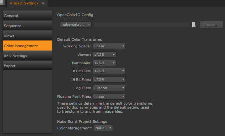
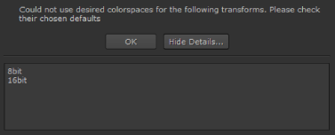

A good place to start work is by defining default Project Settings before importing sequences, particularly in the case of EDLs as they may not contain frame rate information. Project Settings only apply to the current project and override Preferences settings.
NOTE: You can modify Project Settings later on, for example, when you’re ingesting media.
To define Project Settings:
| 1. | Navigate to Project > Edit Settings. |
The Project Settings dialog displays.
| 2. | Click the General sub-menu to set the project Name. |
| 3. | Click the Sequence sub-menu to set the default Output Resolution, Frame Rate, and Start Timecode for new timelines in the current project, and set clip formatting when new clips are added to the timeline. |
| 4. | Click the Views sub-menu to set up multi-view or stereo projects. See Stereoscopic Projects for more information. |
| 5. | Click the Color Management sub-menu to manage the display and file colorspaces for this project. |
See Color Management Settings for more information.
TIP: Use the options in Preferences > Project Defaults > Color Management to apply them to all new projects.
| 6. | Click the RED Settings sub-menu to define the Default Video Decode Mode for new R3D files in the current project. This setting overrides the Preferences > Behaviors > File Handling > default red clip video decode mode control for existing projects. SeeAppendix A: Preferences for more information. |
NOTE: Changing this setting does not change the decode setting for R3D media that has already been imported.
The dropdown contains a sliding resolution scale from FullPremium to SixteenthGood, but bear in mind that higher resolutions are slower to decode.
| 7. | Lastly, click the Export/Roundtrip sub-menu to select the default Shot Preset to use when |
Nuke Studio uses OpenColorIO for color management. All of the colorspaces in Nuke Studio, whether those shipped with the application or custom colorspaces are defined in OCIO config files.
Depending on the OCIO config file that you are working with, there are a number of colorspace options and roles (aliases to colorspaces) that you can set in Nuke Studio. There are also default options, which change depending on what file type you are working with. When the default option is selected, the colorspace that Nuke Studio has set for it is listed in brackets.
TIP: Use the options in Preferences > Project Defaults > Color Management to apply them to all new projects.

| 1. | Set the OpenColorIO Config you want to use for this project. |
Nuke Studio ships with a number of default configurations, but you can:
• use a custom OCIO config file by selecting custom from the OpenColorIO Config dropdown and then entering the file path, or
• add your own config to your .nuke file. See Adding OCIO Configurations for more information.
Changing the configuration updates the Default Color Transforms accordingly. If the selected configuration is invalid for certain transforms, a warning displays. For example, if you choose the shipped iff configuration, the 8-bit and 16-bit transforms are not compatible.

In this case, the non-compatible transforms are set to the raw colorspace.
| 2. | The Working Space transform determines what colorspace files should be converted to, on import, and from, during export - it's the colorspace used by |
NOTE: In earlier releases of Nuke Studio, this colorspace was hidden because linear was always chosen as the Working Space. You may find that some operations work better in colorspaces other than linear. For example, some transforms work better in the CLog colorspace.
| 3. | You can use Default Color Transforms dropdown menus to override how clips in the Viewer, thumbnails, and so on are converted to and from the Working Space. |
| 4. | The Nuke Script Project Settings dropdown determines whether Nuke Studio uses the LUTs read from the configuration specified or the Nuke native LUTs during export. Selecting OCIO makes the relevant OCIO LUTs available to the Read and Write nodes in scripts on a per project basis. |
All configurations except nuke-default automatically switch this control to OCIO.
When the Nuke is selected, Reads and Writes work the same as in previous versions of Nuke, with no integrated OCIO transforms. When OCIO is selected:
• Reads and Writes use OCIO transforms, with no Nuke built-in LUTs applied to the image.
• Read and Write colorspace controls are populated with the list of colorspaces defined in your currently selected OCIO config.
• The default LUT settings dropdowns are also populated with the list of colorspaces or display transforms defined in your OCIO config. The default value for each menu match the defaults in a Nuke Studio project with the same config. These defaults can be overridden using Python callbacks. See the following path for the default implementation that ships with Nuke:
<install_dir>/plugins/nuke/colorspaces.py
• The working space dropdown allows you to change the colorspace that Nuke uses internally for its image processing. This automatically sets the in colorspace of Write nodes and Viewer Processes, and the out colorspace for Read nodes. This defaults to the scene linear role defined in your OCIO config.
• Nuke Studio-created comps no longer contain automatically injected OCIOColorspace nodes. Instead, OCIO Color Management is automatically set in the comp’s Project Settings, and the correct OCIO colorspace is set directly into the Read and Write nodes.
You can add your own OCIO configurations to Nuke Studio as they become available, such as new versions of ACES. You can also add legacy configs for backward compatibility.
| 1. | Navigate to the location of your .nuke file as shown by platform. You may have to create a .nuke folder if it doesn't exist. |
• Linux: /users/login name/.nuke
• Mac OS X: /Users/login name/.nuke
• Windows: ~\.nuke
NOTE: On Windows, the .nuke folder can be found under the directory pointed to by the HOME environment variable. If this variable is not set (which is common), the .nuke directory is under the folder specified by the USERPROFILE environment variable - which is generally of the form drive letter:\Documents and Settings\login name\ or drive letter:\Users\login name\
To find out if the HOME and USERPROFILE environment variables are set and where they are pointing at, enter %HOME% or %USERPROFILE% into the address bar in Windows Explorer. If the environment variable is set, the folder it’s pointing at is opened.
| 2. | Recreate the following structure within your .nuke folder: |
~/plugins/OCIOConfigs/configs/<config name>
| 3. | Copy the contents of the config into the config name named folder. There should be a luts folder and .ocio file at the bare minimum. |
| 4. | If Nuke Studio is already running, relaunch the application to apply the change. |
| 5. | You can now select your configuration from the Project Settings > Color Management > OpenColorIO Config dropdown. |
|
|